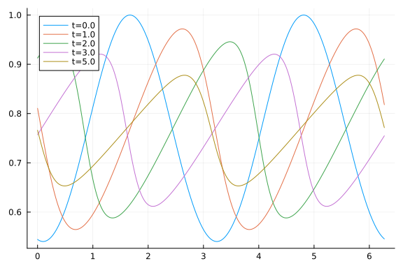

Burgers Pseudospectral Methods Work-Precision Diagrams
using ApproxFun, OrdinaryDiffEq, Sundials
using DiffEqDevTools
using LinearAlgebra
using Plots; gr()Plots.GRBackend()Here is the Burgers equation using Fourier spectral methods.
S = Fourier()
n = 512
x = points(S, n)
D2 = Derivative(S,2)[1:n,1:n]
D = (Derivative(S) → S)[1:n,1:n]
T = ApproxFun.plan_transform(S, n)
Ti = ApproxFun.plan_itransform(S, n)
û₀ = T*cos.(cos.(x.-0.1))
A = 0.03*D2
tmp = similar(û₀)
p = (D,D2,T,Ti,tmp,similar(tmp))
function burgers_nl(dû,û,p,t)
D,D2,T,Ti,u,tmp = p
mul!(tmp, D, û)
mul!(u, Ti, tmp)
mul!(tmp, Ti, û)
@. tmp = tmp*u
mul!(u, T, tmp)
@. dû = - u
endburgers_nl (generic function with 1 method)Reference solution using Rodas5 is below:
prob = SplitODEProblem(DiffEqArrayOperator(Diagonal(A)), burgers_nl, û₀, (0.0,5.0), p)
sol = solve(prob, Rodas5(autodiff=false); reltol=1e-12,abstol=1e-12)
test_sol = TestSolution(sol)
tslices=[0.0 1.0 2.0 3.0 5.0]
ys=hcat((Ti*sol(t) for t in tslices)...)
labels=["t=$t" for t in tslices]
plot(x,ys,label=labels)
High tolerances
diag_linsolve=LinSolveFactorize(W->let tmp = tmp
for i in 1:size(W, 1)
tmp[i] = W[i, i]
end
Diagonal(tmp)
end)Error: UndefVarError: LinSolveFactorize not definedIn-family comparisons
1.IMEX methods (diagonal linear solver)
abstols = 0.1 .^ (5:8)
reltols = 0.1 .^ (1:4)
multipliers = 0.5 .^ (0:3)
setups = [Dict(:alg => IMEXEuler(linsolve=diag_linsolve), :dts => 1e-3 * multipliers),
Dict(:alg => CNAB2(linsolve=diag_linsolve), :dts => 5e-3 * multipliers),
Dict(:alg => CNLF2(linsolve=diag_linsolve), :dts => 5e-3 * multipliers),
Dict(:alg => SBDF2(linsolve=diag_linsolve), :dts => 1e-3 * multipliers)]
labels = ["IMEXEuler" "CNAB2" "CNLF2" "SBDF2"]
@time wp1 = WorkPrecisionSet(prob,abstols,reltols,setups;
print_names=true,names=labels,
numruns=5,seconds=5,
save_everystop=false,appxsol=test_sol,maxiters=Int(1e5));
plot(wp1,label=labels,markershape=:auto,title="IMEX methods, diagonal linsolve, low order")Error: UndefVarError: diag_linsolve not defined- ExpRK methods
abstols = 0.1 .^ (5:8) # all fixed dt methods so these don't matter much
reltols = 0.1 .^ (1:4)
multipliers = 0.5 .^ (0:3)
setups = [Dict(:alg => NorsettEuler(), :dts => 1e-3 * multipliers),
Dict(:alg => ETDRK2(), :dts => 1e-2 * multipliers)]
labels = hcat("NorsettEuler",
"ETDRK2 (caching)")
@time wp2 = WorkPrecisionSet(prob,abstols,reltols,setups;
print_names=true, names=labels,
numruns=5,
save_everystep=false, appxsol=test_sol, maxiters=Int(1e5));
plot(wp2, label=labels, markershape=:auto, title="ExpRK methods, low order")NorsettEuler
ETDRK2 (caching)
4619.146019 seconds (150.91 M allocations: 11.562 GiB, 0.17% gc time, 0.38%
compilation time)
Between family comparisons
abstols = 0.1 .^ (5:8) # all fixed dt methods so these don't matter much
reltols = 0.1 .^ (1:4)
multipliers = 0.5 .^ (0:3)
setups = [Dict(:alg => CNAB2(linsolve=diag_linsolve), :dts => 5e-3 * multipliers),
Dict(:alg => ETDRK2(), :dts => 1e-2 * multipliers)]
labels = ["CNAB2 (diagonal linsolve)" "ETDRK2"]
@time wp3 = WorkPrecisionSet(prob,abstols,reltols,setups;
print_names=true, names=labels,
numruns=5, error_estimate=:l2,
save_everystep=false, appxsol=test_sol, maxiters=Int(1e5));
plot(wp3, label=labels, markershape=:auto, title="Between family, low orders")Error: UndefVarError: diag_linsolve not definedLow tolerances
In-family comparisons
1.IMEX methods (band linear solver)
abstols = 0.1 .^ (7:13)
reltols = 0.1 .^ (4:10)
setups = [Dict(:alg => ARKODE(Sundials.Implicit(), order=3, linear_solver=:Band, jac_upper=1, jac_lower=1)),
Dict(:alg => ARKODE(Sundials.Implicit(), order=4, linear_solver=:Band, jac_upper=1, jac_lower=1)),
Dict(:alg => ARKODE(Sundials.Implicit(), order=5, linear_solver=:Band, jac_upper=1, jac_lower=1))]
labels = hcat("ARKODE3", "ARKODE4", "ARKODE5")
@time wp4 = WorkPrecisionSet(prob,abstols,reltols,setups;
print_names=true, names=labels,
numruns=5, error_estimate=:l2,
save_everystep=false, appxsol=test_sol, maxiters=Int(1e5));
plot(wp4, label=labels, markershape=:auto, title="IMEX methods, band linsolve, medium order")ARKODE3
ARKODE4
ARKODE5
7563.962340 seconds (221.04 M allocations: 21.958 GiB, 0.20% gc time, 0.25%
compilation time)
2.ExpRK methods
abstols = 0.1 .^ (7:11) # all fixed dt methods so these don't matter much
reltols = 0.1 .^ (4:8)
multipliers = 0.5 .^ (0:4)
setups = [Dict(:alg => ETDRK3(), :dts => 1e-2 * multipliers),
Dict(:alg => ETDRK4(), :dts => 1e-2 * multipliers),
Dict(:alg => HochOst4(), :dts => 1e-2 * multipliers)]
labels = hcat("ETDRK3 (caching)", "ETDRK4 (caching)",
"HochOst4 (caching)")
@time wp5 = WorkPrecisionSet(prob,abstols,reltols,setups;
print_names=true, names=labels,
numruns=5, error_estimate=:l2,
save_everystep=false, appxsol=test_sol, maxiters=Int(1e5));
plot(wp5, label=labels, markershape=:auto, title="ExpRK methods, medium order")ETDRK3 (caching)
ETDRK4 (caching)
HochOst4 (caching)
8855.684296 seconds (250.74 M allocations: 18.340 GiB, 0.15% gc time, 0.21%
compilation time)
Between family comparisons
abstols = 0.1 .^ (7:11)
reltols = 0.1 .^ (4:8)
multipliers = 0.5 .^ (0:4)
setups = [Dict(:alg => ARKODE(Sundials.Implicit(), order=5, linear_solver=:Band, jac_upper=1, jac_lower=1)),
Dict(:alg => ETDRK3(), :dts => 1e-2 * multipliers),
Dict(:alg => ETDRK4(), :dts => 1e-2 * multipliers)]
labels = hcat("ARKODE (nondiagonal linsolve)", "ETDRK3 ()", "ETDRK4 ()")
#"ARKODE (Krylov linsolve)")
@time wp6 = WorkPrecisionSet(prob,abstols,reltols,setups;
print_names=true, names=labels,
numruns=5, error_estimate=:l2,
save_everystep=false, appxsol=test_sol, maxiters=Int(1e5));
plot(wp6, label=labels, markershape=:auto, title="Between family, medium order")ARKODE (nondiagonal linsolve)
ETDRK3 ()
ETDRK4 ()
5680.896439 seconds (142.75 M allocations: 10.252 GiB, 0.14% gc time, 0.00%
compilation time)
Appendix
These benchmarks are a part of the SciMLBenchmarks.jl repository, found at: https://github.com/SciML/SciMLBenchmarks.jl. For more information on high-performance scientific machine learning, check out the SciML Open Source Software Organization https://sciml.ai.
To locally run this benchmark, do the following commands:
using SciMLBenchmarks
SciMLBenchmarks.weave_file("benchmarks/MOLPDE","burgers_spectral_wpd.jmd")Computer Information:
Julia Version 1.8.3
Commit 0434deb161e (2022-11-14 20:14 UTC)
Platform Info:
OS: Linux (x86_64-linux-gnu)
CPU: 128 × AMD EPYC 7502 32-Core Processor
WORD_SIZE: 64
LIBM: libopenlibm
LLVM: libLLVM-13.0.1 (ORCJIT, znver2)
Threads: 128 on 128 virtual cores
Environment:
JULIA_CPU_THREADS = 128
JULIA_DEPOT_PATH = /cache/julia-buildkite-plugin/depots/5b300254-1738-4989-ae0a-f4d2d937f953
LD_LIBRARY_PATH = /cache/julia-buildkite-plugin/depots/5b300254-1738-4989-ae0a-f4d2d937f953/artifacts/7661e5a9aa217ce3c468389d834a4fb43b0911e8/lib:/cache/julia-buildkite-plugin/depots/5b300254-1738-4989-ae0a-f4d2d937f953/artifacts/2e8fae88dcadc37883e31246fe7397f4f1039f88/lib:/cache/julia-buildkite-plugin/depots/5b300254-1738-4989-ae0a-f4d2d937f953/artifacts/d00220164876dea2cb19993200662745eed5e2db/lib:/cache/julia-buildkite-plugin/julia_installs/bin/linux/x64/1.8/julia-1.8-latest-linux-x86_64/bin/../lib/julia:/cache/julia-buildkite-plugin/depots/5b300254-1738-4989-ae0a-f4d2d937f953/artifacts/3e19866657986912870f596aecfee137473965a9/lib:/cache/julia-buildkite-plugin/depots/5b300254-1738-4989-ae0a-f4d2d937f953/artifacts/dc526f26fb179a3f68eb13fcbe5d2d2a5aa7eeac/lib:/cache/julia-buildkite-plugin/depots/5b300254-1738-4989-ae0a-f4d2d937f953/artifacts/5a508a62784097dab7c7ae5805f2c89d2cc97397/lib:/cache/julia-buildkite-plugin/depots/5b300254-1738-4989-ae0a-f4d2d937f953/artifacts/303fe895f57042ea41055187ec4af6322989b5cc/lib:/cache/julia-buildkite-plugin/depots/5b300254-1738-4989-ae0a-f4d2d937f953/artifacts/f3337de0321b3370b90643d18bf63bd4ee79c991/lib:/cache/julia-buildkite-plugin/depots/5b300254-1738-4989-ae0a-f4d2d937f953/artifacts/ddfc455343aff48d27c1b39d7fcb07e0d9242b50/lib:/cache/julia-buildkite-plugin/depots/5b300254-1738-4989-ae0a-f4d2d937f953/artifacts/54c97eb1b0a6f74bac96297a815ddec2204a7db7/lib:/cache/julia-buildkite-plugin/depots/5b300254-1738-4989-ae0a-f4d2d937f953/artifacts/2b77b304b0975d15bd5aeb4d1d5097ac6256ea3c/lib:/cache/julia-buildkite-plugin/depots/5b300254-1738-4989-ae0a-f4d2d937f953/artifacts/fac7e6d8fc4c5775bf5118ab494120d2a0db4d64/lib:/cache/julia-buildkite-plugin/depots/5b300254-1738-4989-ae0a-f4d2d937f953/artifacts/387d89822da323c098aba6f8ab316874d4e90f2e/lib:/cache/julia-buildkite-plugin/depots/5b300254-1738-4989-ae0a-f4d2d937f953/artifacts/16154f990153825ec24b52aac11165df2084b9dc/lib:/cache/julia-buildkite-plugin/depots/5b300254-1738-4989-ae0a-f4d2d937f953/artifacts/92111ef825c608ea220f8e679dd8d908d7ac5b83/lib:/cache/julia-buildkite-plugin/depots/5b300254-1738-4989-ae0a-f4d2d937f953/artifacts/f3ec73d7bf2f4419ba0943e94f7738cf56050797/lib:/cache/julia-buildkite-plugin/depots/5b300254-1738-4989-ae0a-f4d2d937f953/artifacts/4487a7356408c3a92924e56f9d3891724855282c/lib:/cache/julia-buildkite-plugin/depots/5b300254-1738-4989-ae0a-f4d2d937f953/artifacts/51c48c945ae76d6c0102649044d9976d93b78125/lib:/cache/julia-buildkite-plugin/depots/5b300254-1738-4989-ae0a-f4d2d937f953/artifacts/5ba11d7fb2ceb4ca812844eb4af886a212b47f65/lib:/cache/julia-buildkite-plugin/depots/5b300254-1738-4989-ae0a-f4d2d937f953/artifacts/431a0e3706ffe717ab5d35c47bc38626c6169504/lib:/cache/julia-buildkite-plugin/depots/5b300254-1738-4989-ae0a-f4d2d937f953/artifacts/fc6071b99b67da0ae4e49ebab70c369ce9a76c9e/lib:/cache/julia-buildkite-plugin/depots/5b300254-1738-4989-ae0a-f4d2d937f953/artifacts/527e66fb9b12dfd1f58157fe0b3fd52b84062432/lib:/cache/julia-buildkite-plugin/depots/5b300254-1738-4989-ae0a-f4d2d937f953/artifacts/921a059ebce52878d7a7944c9c345327958d1f5b/lib:/cache/julia-buildkite-plugin/depots/5b300254-1738-4989-ae0a-f4d2d937f953/artifacts/8b0284dc2781b9481ff92e281f1db532d8421040/lib:/cache/julia-buildkite-plugin/depots/5b300254-1738-4989-ae0a-f4d2d937f953/artifacts/d11639e2a53726f2593e25ba98ed7b416f62bbc5/lib:/cache/julia-buildkite-plugin/depots/5b300254-1738-4989-ae0a-f4d2d937f953/artifacts/62c010876222f83fe8878bf2af0e362083d20ee3/lib:/cache/julia-buildkite-plugin/depots/5b300254-1738-4989-ae0a-f4d2d937f953/artifacts/ee20a84d0166c074dfa736b642902dd87b4da48d/lib:/cache/julia-buildkite-plugin/depots/5b300254-1738-4989-ae0a-f4d2d937f953/artifacts/459252c01ffcd08700841efdd4b6d3edfe5916e7/lib:/cache/julia-buildkite-plugin/depots/5b300254-1738-4989-ae0a-f4d2d937f953/artifacts/cc415631aeb190b075329ce756f690a90e1f873b/lib:/cache/julia-buildkite-plugin/depots/5b300254-1738-4989-ae0a-f4d2d937f953/artifacts/e19f3bb2eef5fb956b672235ea5323b5be9a0626/lib:/cache/julia-buildkite-plugin/depots/5b300254-1738-4989-ae0a-f4d2d937f953/artifacts/0631e2a6a31b5692eec7a575836451b16b734ec0/lib:/cache/julia-buildkite-plugin/depots/5b300254-1738-4989-ae0a-f4d2d937f953/artifacts/89ed5dda220da4354ada1970107e13679914bbbc/lib:/cache/julia-buildkite-plugin/depots/5b300254-1738-4989-ae0a-f4d2d937f953/artifacts/595f9476b128877ab5bf73883ff6c8dc8dacfe66/lib:/cache/julia-buildkite-plugin/depots/5b300254-1738-4989-ae0a-f4d2d937f953/artifacts/587de110e5f58fd435dc35b294df31bb7a75f692/lib:/cache/julia-buildkite-plugin/depots/5b300254-1738-4989-ae0a-f4d2d937f953/artifacts/fc239b3ff5739aeab252bd154fa4dd045fefe629/lib:/cache/julia-buildkite-plugin/depots/5b300254-1738-4989-ae0a-f4d2d937f953/artifacts/25fa81dbac6496585a91dbdc258273d39442466f/lib:/cache/julia-buildkite-plugin/depots/5b300254-1738-4989-ae0a-f4d2d937f953/artifacts/eff86eedadb59cff1a61399e3242b3f529ca6f59/lib:/cache/julia-buildkite-plugin/depots/5b300254-1738-4989-ae0a-f4d2d937f953/artifacts/b409c0eafb4254a980f9e730f6fbe56867890f6a/lib:/cache/julia-buildkite-plugin/depots/5b300254-1738-4989-ae0a-f4d2d937f953/artifacts/a84cc58d5161b950f268bb562e105bbbf4d6004a/lib:/cache/julia-buildkite-plugin/depots/5b300254-1738-4989-ae0a-f4d2d937f953/artifacts/f0d193662fead3500b523f94b4f1878daab59a93/lib:/cache/julia-buildkite-plugin/depots/5b300254-1738-4989-ae0a-f4d2d937f953/artifacts/05616da88f6b36c7c94164d4070776aef18ce46b/lib:/cache/julia-buildkite-plugin/depots/5b300254-1738-4989-ae0a-f4d2d937f953/artifacts/2df316da869cd97f7d70029428ee1e2e521407cd/lib:/cache/julia-buildkite-plugin/depots/5b300254-1738-4989-ae0a-f4d2d937f953/artifacts/7190f0cb0832b80761cc6d513dd9b935f3e26358/lib:/cache/julia-buildkite-plugin/depots/5b300254-1738-4989-ae0a-f4d2d937f953/artifacts/4daa3879a820580557ef34945e2ae243dfcbba11/lib:/cache/julia-buildkite-plugin/depots/5b300254-1738-4989-ae0a-f4d2d937f953/artifacts/5aa80c7b8e919cbfee41019069d9b25269befe10/lib:/cache/julia-buildkite-plugin/depots/5b300254-1738-4989-ae0a-f4d2d937f953/artifacts/8793267ae1f4b96f626caa27147aa0218389c30d/lib:/cache/julia-buildkite-plugin/depots/5b300254-1738-4989-ae0a-f4d2d937f953/artifacts/694cae97bb3cbf8f1f73f2ecabd891602ccf1751/lib:/cache/julia-buildkite-plugin/depots/5b300254-1738-4989-ae0a-f4d2d937f953/artifacts/d22cde7583df1d5f71160a8e4676955a66a91f33/lib:/cache/julia-buildkite-plugin/depots/5b300254-1738-4989-ae0a-f4d2d937f953/artifacts/b610fc4e040c9a46c250ea4792cc64098003578a/lib:/cache/julia-buildkite-plugin/depots/5b300254-1738-4989-ae0a-f4d2d937f953/artifacts/cacd8c147f866d6672e1aca9bb01fb919a81e96a/lib:/cache/julia-buildkite-plugin/depots/5b300254-1738-4989-ae0a-f4d2d937f953/artifacts/b7dc5dce963737414a564aca8d4b82ee388f4fa1/lib:/cache/julia-buildkite-plugin/depots/5b300254-1738-4989-ae0a-f4d2d937f953/artifacts/0d364e900393f710a03a5bafe2852d76e4d2c2cd/lib:/cache/julia-buildkite-plugin/depots/5b300254-1738-4989-ae0a-f4d2d937f953/artifacts/79cc5446ced978de84b6e673e01da0ebfdd6e4a5/lib:/cache/julia-buildkite-plugin/depots/5b300254-1738-4989-ae0a-f4d2d937f953/artifacts/1a2adcee7d99fea18ead33c350332626b262e29a/lib:/cache/julia-buildkite-plugin/depots/5b300254-1738-4989-ae0a-f4d2d937f953/artifacts/84f18b0f422f5d6a023fe871b59a9fc536d04f5c/lib:/cache/julia-buildkite-plugin/depots/5b300254-1738-4989-ae0a-f4d2d937f953/artifacts/3c7eef5f322b19cd4b5db6b21f8cafda87b8b26c/lib:/cache/julia-buildkite-plugin/depots/5b300254-1738-4989-ae0a-f4d2d937f953/artifacts/4443e44120d70a97f8094a67268a886256077e69/lib:/cache/julia-buildkite-plugin/depots/5b300254-1738-4989-ae0a-f4d2d937f953/artifacts/988066cc974e30c89774b0c471f47201975a4423/lib:/cache/julia-buildkite-plugin/depots/5b300254-1738-4989-ae0a-f4d2d937f953/artifacts/26099abd23e11fc440259049997307380be745c8/lib:/cache/julia-buildkite-plugin/julia_installs/bin/linux/x64/1.8/julia-1.8-latest-linux-x86_64/bin/../lib/julia:/cache/julia-buildkite-plugin/julia_installs/bin/linux/x64/1.8/julia-1.8-latest-linux-x86_64/bin/../lib:
Package Information:
Status `/cache/build/exclusive-amdci3-0/julialang/scimlbenchmarks-dot-jl/benchmarks/MOLPDE/Project.toml`
⌃ [28f2ccd6] ApproxFun v0.13.10
⌃ [f3b72e0c] DiffEqDevTools v2.32.0
⌃ [5b8099bc] DomainSets v0.5.13
⌃ [7f56f5a3] LSODA v0.7.0
⌃ [94925ecb] MethodOfLines v0.5.0
⌃ [961ee093] ModelingToolkit v8.27.0
[09606e27] ODEInterfaceDiffEq v3.11.0
⌃ [1dea7af3] OrdinaryDiffEq v6.28.0
⌃ [91a5bcdd] Plots v1.35.3
[31c91b34] SciMLBenchmarks v0.1.1
⌃ [c3572dad] Sundials v4.10.1
[37e2e46d] LinearAlgebra
Info Packages marked with ⌃ have new versions available and may be upgradable.And the full manifest:
Status `/cache/build/exclusive-amdci3-0/julialang/scimlbenchmarks-dot-jl/benchmarks/MOLPDE/Manifest.toml`
⌃ [c3fe647b] AbstractAlgebra v0.27.5
[621f4979] AbstractFFTs v1.2.1
⌃ [1520ce14] AbstractTrees v0.4.2
[79e6a3ab] Adapt v3.4.0
⌃ [28f2ccd6] ApproxFun v0.13.10
⌃ [fbd15aa5] ApproxFunBase v0.7.21
⌃ [59844689] ApproxFunFourier v0.3.2
⌃ [b70543e2] ApproxFunOrthogonalPolynomials v0.5.10
⌃ [f8fcb915] ApproxFunSingularities v0.3.1
[dce04be8] ArgCheck v2.3.0
[ec485272] ArnoldiMethod v0.2.0
⌃ [4fba245c] ArrayInterface v6.0.23
⌃ [30b0a656] ArrayInterfaceCore v0.1.20
[6ba088a2] ArrayInterfaceGPUArrays v0.2.2
⌃ [015c0d05] ArrayInterfaceOffsetArrays v0.1.6
⌃ [b0d46f97] ArrayInterfaceStaticArrays v0.1.4
⌃ [dd5226c6] ArrayInterfaceStaticArraysCore v0.1.0
⌃ [4c555306] ArrayLayouts v0.8.11
[15f4f7f2] AutoHashEquals v0.2.0
[13072b0f] AxisAlgorithms v1.0.1
⌃ [aae01518] BandedMatrices v0.17.7
[198e06fe] BangBang v0.3.37
[9718e550] Baselet v0.1.1
[e2ed5e7c] Bijections v0.1.4
[9e28174c] BinDeps v1.0.2
⌃ [d1d4a3ce] BitFlags v0.1.5
⌃ [62783981] BitTwiddlingConvenienceFunctions v0.1.4
⌃ [8e7c35d0] BlockArrays v0.16.20
[ffab5731] BlockBandedMatrices v0.11.9
[fa961155] CEnum v0.4.2
⌃ [2a0fbf3d] CPUSummary v0.1.27
[00ebfdb7] CSTParser v3.3.6
[49dc2e85] Calculus v0.5.1
[d360d2e6] ChainRulesCore v1.15.6
[9e997f8a] ChangesOfVariables v0.1.4
⌃ [fb6a15b2] CloseOpenIntervals v0.1.10
[944b1d66] CodecZlib v0.7.0
[35d6a980] ColorSchemes v3.19.0
[3da002f7] ColorTypes v0.11.4
[c3611d14] ColorVectorSpace v0.9.9
[5ae59095] Colors v0.12.8
[861a8166] Combinatorics v1.0.2
⌃ [a80b9123] CommonMark v0.8.6
⌃ [38540f10] CommonSolve v0.2.1
[bbf7d656] CommonSubexpressions v0.3.0
⌅ [34da2185] Compat v3.46.0
⌃ [b152e2b5] CompositeTypes v0.1.2
[a33af91c] CompositionsBase v0.1.1
[8f4d0f93] Conda v1.7.0
[187b0558] ConstructionBase v1.4.1
[d38c429a] Contour v0.6.2
[adafc99b] CpuId v0.3.1
[a8cc5b0e] Crayons v4.1.1
[717857b8] DSP v0.7.7
⌃ [9a962f9c] DataAPI v1.12.0
[864edb3b] DataStructures v0.18.13
[e2d170a0] DataValueInterfaces v1.0.0
[244e2a9f] DefineSingletons v0.1.2
[b429d917] DensityInterface v0.4.0
⌃ [2b5f629d] DiffEqBase v6.105.1
⌃ [459566f4] DiffEqCallbacks v2.24.1
⌃ [f3b72e0c] DiffEqDevTools v2.32.0
⌃ [77a26b50] DiffEqNoiseProcess v5.13.0
[163ba53b] DiffResults v1.1.0
⌃ [b552c78f] DiffRules v1.11.1
[b4f34e82] Distances v0.10.7
⌃ [31c24e10] Distributions v0.25.75
⌅ [ffbed154] DocStringExtensions v0.8.6
⌃ [5b8099bc] DomainSets v0.5.13
[fa6b7ba4] DualNumbers v0.6.8
[7c1d4256] DynamicPolynomials v0.4.5
⌃ [d4d017d3] ExponentialUtilities v1.19.0
[e2ba6199] ExprTools v0.1.8
[c87230d0] FFMPEG v0.4.1
[7a1cc6ca] FFTW v1.5.0
⌃ [7034ab61] FastBroadcast v0.2.1
[9aa1b823] FastClosures v0.3.2
⌅ [442a2c76] FastGaussQuadrature v0.4.9
[29a986be] FastLapackInterface v1.2.7
⌃ [057dd010] FastTransforms v0.14.5
⌃ [1a297f60] FillArrays v0.13.4
⌃ [6a86dc24] FiniteDiff v2.15.0
[53c48c17] FixedPointNumbers v0.8.4
[59287772] Formatting v0.4.2
⌃ [f6369f11] ForwardDiff v0.10.32
[069b7b12] FunctionWrappers v1.1.3
[77dc65aa] FunctionWrappersWrappers v0.1.1
[46192b85] GPUArraysCore v0.1.2
⌅ [28b8d3ca] GR v0.69.4
[a8297547] GenericFFT v0.1.1
[c145ed77] GenericSchur v0.5.3
[d7ba0133] Git v1.2.1
[86223c79] Graphs v1.7.4
[42e2da0e] Grisu v1.0.2
⌃ [0b43b601] Groebner v0.2.10
[d5909c97] GroupsCore v0.4.0
⌃ [cd3eb016] HTTP v1.4.0
⌅ [eafb193a] Highlights v0.4.5
⌃ [3e5b6fbb] HostCPUFeatures v0.1.8
[34004b35] HypergeometricFunctions v0.3.11
[7073ff75] IJulia v1.23.3
[615f187c] IfElse v0.1.1
⌃ [4858937d] InfiniteArrays v0.12.6
⌃ [cde9dba0] InfiniteLinearAlgebra v0.6.10
⌃ [e1ba4f0e] Infinities v0.1.5
[d25df0c9] Inflate v0.1.3
[83e8ac13] IniFile v0.5.1
[22cec73e] InitialValues v0.3.1
[18e54dd8] IntegerMathUtils v0.1.0
[a98d9a8b] Interpolations v0.14.6
[8197267c] IntervalSets v0.7.3
[3587e190] InverseFunctions v0.1.8
[92d709cd] IrrationalConstants v0.1.1
[c8e1da08] IterTools v1.4.0
[42fd0dbc] IterativeSolvers v0.9.2
[82899510] IteratorInterfaceExtensions v1.0.0
[1019f520] JLFzf v0.1.5
[692b3bcd] JLLWrappers v1.4.1
[682c06a0] JSON v0.21.3
⌃ [98e50ef6] JuliaFormatter v1.0.11
⌃ [ccbc3e58] JumpProcesses v9.2.0
⌅ [ef3ab10e] KLU v0.3.0
⌅ [ba0b0d4f] Krylov v0.8.4
⌅ [0b1a1467] KrylovKit v0.5.4
⌃ [7f56f5a3] LSODA v0.7.0
[b964fa9f] LaTeXStrings v1.3.0
⌃ [2ee39098] LabelledArrays v1.12.0
[984bce1d] LambertW v0.4.5
[23fbe1c1] Latexify v0.15.17
⌃ [10f19ff3] LayoutPointers v0.1.10
⌃ [5078a376] LazyArrays v0.22.11
⌃ [d7e5e226] LazyBandedMatrices v0.8.1
[d3d80556] LineSearches v7.2.0
⌃ [7ed4a6bd] LinearSolve v1.26.1
⌃ [2ab3a3ac] LogExpFunctions v0.3.18
⌅ [e6f89c97] LoggingExtras v0.4.9
⌃ [bdcacae8] LoopVectorization v0.12.133
[898213cb] LowRankApprox v0.5.2
[1914dd2f] MacroTools v0.5.10
[d125e4d3] ManualMemory v0.1.8
⌃ [a3b82374] MatrixFactorizations v0.9.2
⌃ [739be429] MbedTLS v1.1.6
⌃ [442fdcdd] Measures v0.3.1
[e9d8d322] Metatheory v1.3.5
⌃ [94925ecb] MethodOfLines v0.5.0
[128add7d] MicroCollections v0.1.3
[e1d29d7a] Missings v1.0.2
⌃ [961ee093] ModelingToolkit v8.27.0
⌃ [46d2c3a1] MuladdMacro v0.2.2
[102ac46a] MultivariatePolynomials v0.4.6
[ffc61752] Mustache v1.0.14
⌃ [d8a4904e] MutableArithmetics v1.0.5
⌃ [d41bc354] NLSolversBase v7.8.2
[2774e3e8] NLsolve v4.5.1
[77ba4419] NaNMath v1.0.1
⌅ [8913a72c] NonlinearSolve v0.3.22
[4d1e1d77] Nullables v1.0.0
[54ca160b] ODEInterface v0.5.0
[09606e27] ODEInterfaceDiffEq v3.11.0
⌃ [6fe1bfb0] OffsetArrays v1.12.7
⌃ [4d8831e6] OpenSSL v1.2.1
⌃ [429524aa] Optim v1.7.3
[bac558e1] OrderedCollections v1.4.1
⌃ [1dea7af3] OrdinaryDiffEq v6.28.0
[90014a1f] PDMats v0.11.16
[d96e819e] Parameters v0.12.3
⌃ [69de0a69] Parsers v2.4.1
[b98c9c47] Pipe v1.3.0
⌃ [ccf2f8ad] PlotThemes v3.0.0
[995b91a9] PlotUtils v1.3.1
⌃ [91a5bcdd] Plots v1.35.3
⌃ [e409e4f3] PoissonRandom v0.4.1
⌃ [f517fe37] Polyester v0.6.16
⌃ [1d0040c9] PolyesterWeave v0.1.10
[f27b6e38] Polynomials v3.2.0
[85a6dd25] PositiveFactorizations v0.2.4
[d236fae5] PreallocationTools v0.4.4
[21216c6a] Preferences v1.3.0
[27ebfcd6] Primes v0.5.3
⌃ [1fd47b50] QuadGK v2.5.0
[74087812] Random123 v1.6.0
[fb686558] RandomExtensions v0.4.3
[e6cf234a] RandomNumbers v1.5.3
[c84ed2f1] Ratios v0.4.3
⌃ [3cdcf5f2] RecipesBase v1.3.0
⌃ [01d81517] RecipesPipeline v0.6.7
⌃ [731186ca] RecursiveArrayTools v2.32.0
[f2c3362d] RecursiveFactorization v0.2.12
[189a3867] Reexport v1.2.2
[42d2dcc6] Referenceables v0.1.2
[05181044] RelocatableFolders v1.0.0
[ae029012] Requires v1.3.0
[ae5879a3] ResettableStacks v1.1.1
[79098fc4] Rmath v0.7.0
⌃ [47965b36] RootedTrees v2.15.0
⌃ [7e49a35a] RuntimeGeneratedFunctions v0.5.3
[3cdde19b] SIMDDualNumbers v0.1.1
[94e857df] SIMDTypes v0.1.0
⌃ [476501e8] SLEEFPirates v0.6.36
[1bc83da4] SafeTestsets v0.0.1
⌃ [0bca4576] SciMLBase v1.59.5
[31c91b34] SciMLBenchmarks v0.1.1
[6c6a2e73] Scratch v1.1.1
[f8ebbe35] SemiseparableMatrices v0.3.4
[efcf1570] Setfield v1.1.1
[992d4aef] Showoff v1.0.3
[777ac1f9] SimpleBufferStream v1.1.0
[699a6c99] SimpleTraits v0.9.4
[47aef6b3] SimpleWeightedGraphs v1.2.1
[66db9d55] SnoopPrecompile v1.0.1
[b85f4697] SoftGlobalScope v1.1.0
⌃ [a2af1166] SortingAlgorithms v1.0.1
⌃ [47a9eef4] SparseDiffTools v1.27.0
[276daf66] SpecialFunctions v2.1.7
[171d559e] SplittablesBase v0.1.15
[860ef19b] StableRNGs v1.0.0
⌅ [aedffcd0] Static v0.7.7
⌃ [90137ffa] StaticArrays v1.5.9
[1e83bf80] StaticArraysCore v1.4.0
[82ae8749] StatsAPI v1.5.0
[2913bbd2] StatsBase v0.33.21
[4c63d2b9] StatsFuns v1.0.1
⌅ [7792a7ef] StrideArraysCore v0.3.15
[69024149] StringEncodings v0.3.5
⌃ [c3572dad] Sundials v4.10.1
[d1185830] SymbolicUtils v0.19.11
⌃ [0c5d862f] Symbolics v4.11.1
[3783bdb8] TableTraits v1.0.1
⌃ [bd369af6] Tables v1.9.0
[62fd8b95] TensorCore v0.1.1
⌅ [8ea1fca8] TermInterface v0.2.3
[8290d209] ThreadingUtilities v0.5.0
[ac1d9e8a] ThreadsX v0.1.11
⌃ [a759f4b9] TimerOutputs v0.5.21
[c751599d] ToeplitzMatrices v0.7.1
[0796e94c] Tokenize v0.5.24
[3bb67fe8] TranscodingStreams v0.9.9
[28d57a85] Transducers v0.4.74
[a2a6695c] TreeViews v0.3.0
⌃ [d5829a12] TriangularSolve v0.1.14
[410a4b4d] Tricks v0.1.6
[30578b45] URIParser v0.4.1
⌃ [5c2747f8] URIs v1.4.0
[3a884ed6] UnPack v1.0.2
[1cfade01] UnicodeFun v0.4.1
⌃ [1986cc42] Unitful v1.12.0
[41fe7b60] Unzip v0.2.0
⌃ [3d5dd08c] VectorizationBase v0.21.51
[81def892] VersionParsing v1.3.0
[19fa3120] VertexSafeGraphs v0.2.0
⌃ [44d3d7a6] Weave v0.10.9
[efce3f68] WoodburyMatrices v0.5.5
⌃ [ddb6d928] YAML v0.4.7
⌃ [c2297ded] ZMQ v1.2.1
[700de1a5] ZygoteRules v0.2.2
[6e34b625] Bzip2_jll v1.0.8+0
[83423d85] Cairo_jll v1.16.1+1
[2e619515] Expat_jll v2.4.8+0
[b22a6f82] FFMPEG_jll v4.4.2+2
[f5851436] FFTW_jll v3.3.10+0
⌃ [34b6f7d7] FastTransforms_jll v0.6.0+0
[a3f928ae] Fontconfig_jll v2.13.93+0
[d7e528f0] FreeType2_jll v2.10.4+0
[559328eb] FriBidi_jll v1.0.10+0
[0656b61e] GLFW_jll v3.3.8+0
⌅ [d2c73de3] GR_jll v0.69.1+0
[78b55507] Gettext_jll v0.21.0+0
[f8c6e375] Git_jll v2.34.1+0
[7746bdde] Glib_jll v2.74.0+1
[3b182d85] Graphite2_jll v1.3.14+0
[2e76f6c2] HarfBuzz_jll v2.8.1+1
[1d5cc7b8] IntelOpenMP_jll v2018.0.3+2
[aacddb02] JpegTurbo_jll v2.1.2+0
[c1c5ebd0] LAME_jll v3.100.1+0
[88015f11] LERC_jll v3.0.0+1
⌃ [1d63c593] LLVMOpenMP_jll v14.0.4+0
[aae0fff6] LSODA_jll v0.1.1+0
[dd4b983a] LZO_jll v2.10.1+0
⌅ [e9f186c6] Libffi_jll v3.2.2+1
[d4300ac3] Libgcrypt_jll v1.8.7+0
[7e76a0d4] Libglvnd_jll v1.3.0+3
[7add5ba3] Libgpg_error_jll v1.42.0+0
[94ce4f54] Libiconv_jll v1.16.1+1
[4b2f31a3] Libmount_jll v2.35.0+0
[89763e89] Libtiff_jll v4.4.0+0
[38a345b3] Libuuid_jll v2.36.0+0
⌃ [856f044c] MKL_jll v2022.1.0+0
[c771fb93] ODEInterface_jll v0.0.1+0
[e7412a2a] Ogg_jll v1.3.5+1
⌃ [458c3c95] OpenSSL_jll v1.1.17+0
[efe28fd5] OpenSpecFun_jll v0.5.5+0
[91d4177d] Opus_jll v1.3.2+0
[30392449] Pixman_jll v0.40.1+0
⌃ [ea2cea3b] Qt5Base_jll v5.15.3+1
[f50d1b31] Rmath_jll v0.3.0+0
[fb77eaff] Sundials_jll v5.2.1+0
[a2964d1f] Wayland_jll v1.19.0+0
[2381bf8a] Wayland_protocols_jll v1.25.0+0
[02c8fc9c] XML2_jll v2.9.14+0
[aed1982a] XSLT_jll v1.1.34+0
[4f6342f7] Xorg_libX11_jll v1.6.9+4
[0c0b7dd1] Xorg_libXau_jll v1.0.9+4
[935fb764] Xorg_libXcursor_jll v1.2.0+4
[a3789734] Xorg_libXdmcp_jll v1.1.3+4
[1082639a] Xorg_libXext_jll v1.3.4+4
[d091e8ba] Xorg_libXfixes_jll v5.0.3+4
[a51aa0fd] Xorg_libXi_jll v1.7.10+4
[d1454406] Xorg_libXinerama_jll v1.1.4+4
[ec84b674] Xorg_libXrandr_jll v1.5.2+4
[ea2f1a96] Xorg_libXrender_jll v0.9.10+4
[14d82f49] Xorg_libpthread_stubs_jll v0.1.0+3
[c7cfdc94] Xorg_libxcb_jll v1.13.0+3
[cc61e674] Xorg_libxkbfile_jll v1.1.0+4
[12413925] Xorg_xcb_util_image_jll v0.4.0+1
[2def613f] Xorg_xcb_util_jll v0.4.0+1
[975044d2] Xorg_xcb_util_keysyms_jll v0.4.0+1
[0d47668e] Xorg_xcb_util_renderutil_jll v0.3.9+1
[c22f9ab0] Xorg_xcb_util_wm_jll v0.4.1+1
[35661453] Xorg_xkbcomp_jll v1.4.2+4
[33bec58e] Xorg_xkeyboard_config_jll v2.27.0+4
[c5fb5394] Xorg_xtrans_jll v1.4.0+3
[8f1865be] ZeroMQ_jll v4.3.4+0
[3161d3a3] Zstd_jll v1.5.2+0
⌅ [214eeab7] fzf_jll v0.29.0+0
[a4ae2306] libaom_jll v3.4.0+0
[0ac62f75] libass_jll v0.15.1+0
[f638f0a6] libfdk_aac_jll v2.0.2+0
[b53b4c65] libpng_jll v1.6.38+0
[a9144af2] libsodium_jll v1.0.20+0
[f27f6e37] libvorbis_jll v1.3.7+1
[1270edf5] x264_jll v2021.5.5+0
[dfaa095f] x265_jll v3.5.0+0
[d8fb68d0] xkbcommon_jll v1.4.1+0
[0dad84c5] ArgTools v1.1.1
[56f22d72] Artifacts
[2a0f44e3] Base64
[ade2ca70] Dates
[8bb1440f] DelimitedFiles
[8ba89e20] Distributed
[f43a241f] Downloads v1.6.0
[7b1f6079] FileWatching
[9fa8497b] Future
[b77e0a4c] InteractiveUtils
[4af54fe1] LazyArtifacts
[b27032c2] LibCURL v0.6.3
[76f85450] LibGit2
[8f399da3] Libdl
[37e2e46d] LinearAlgebra
[56ddb016] Logging
[d6f4376e] Markdown
[a63ad114] Mmap
[ca575930] NetworkOptions v1.2.0
[44cfe95a] Pkg v1.8.0
[de0858da] Printf
[3fa0cd96] REPL
[9a3f8284] Random
[ea8e919c] SHA v0.7.0
[9e88b42a] Serialization
[1a1011a3] SharedArrays
[6462fe0b] Sockets
[2f01184e] SparseArrays
[10745b16] Statistics
[4607b0f0] SuiteSparse
[fa267f1f] TOML v1.0.0
[a4e569a6] Tar v1.10.1
[8dfed614] Test
[cf7118a7] UUIDs
[4ec0a83e] Unicode
[e66e0078] CompilerSupportLibraries_jll v0.5.2+0
[781609d7] GMP_jll v6.2.1+2
[deac9b47] LibCURL_jll v7.84.0+0
[29816b5a] LibSSH2_jll v1.10.2+0
[3a97d323] MPFR_jll v4.1.1+1
[c8ffd9c3] MbedTLS_jll v2.28.0+0
[14a3606d] MozillaCACerts_jll v2022.2.1
[4536629a] OpenBLAS_jll v0.3.20+0
[05823500] OpenLibm_jll v0.8.1+0
[efcefdf7] PCRE2_jll v10.40.0+0
[bea87d4a] SuiteSparse_jll v5.10.1+0
[83775a58] Zlib_jll v1.2.12+3
[8e850b90] libblastrampoline_jll v5.1.1+0
[8e850ede] nghttp2_jll v1.48.0+0
[3f19e933] p7zip_jll v17.4.0+0
Info Packages marked with ⌃ and ⌅ have new versions available, but those with ⌅ are restricted by compatibility constraints from upgrading. To see why use `status --outdated -m`